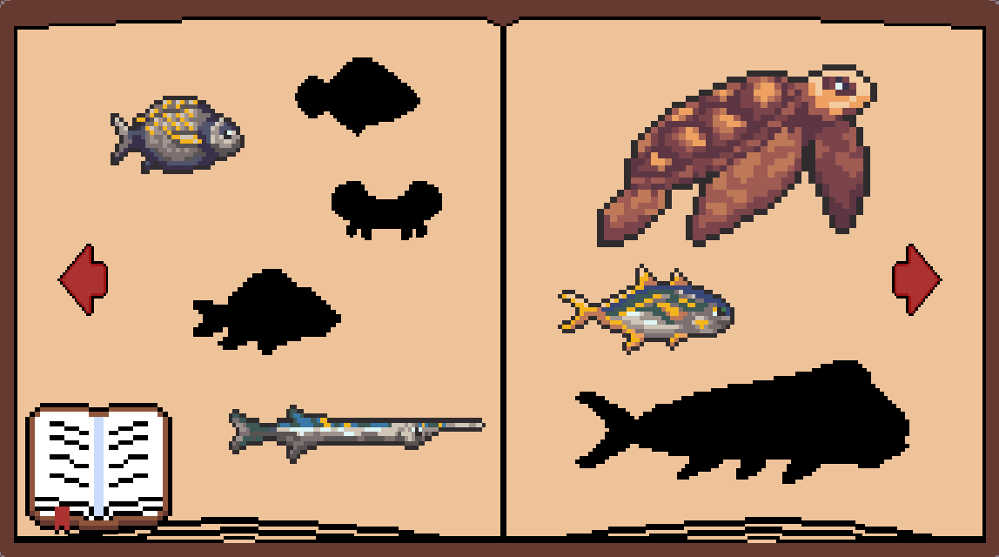
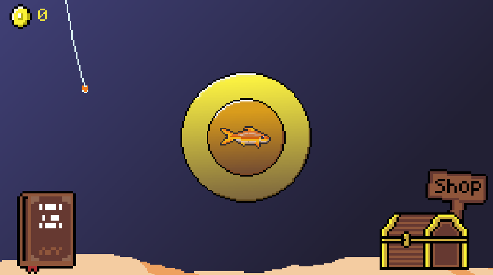
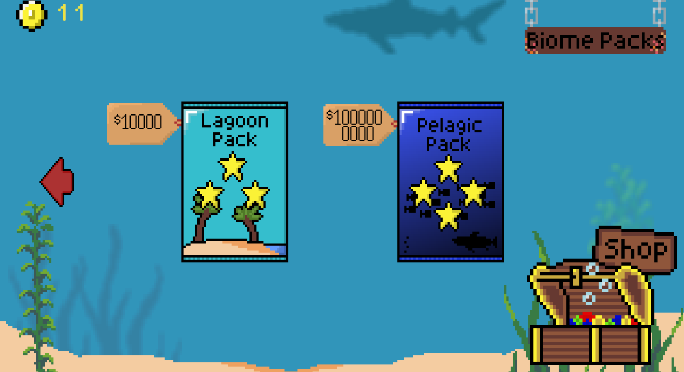

Computer Science student at Florida State University
Christopher
Thomas
Computer Science student focused on software development, problem solving, and building practical applications. I also enjoy experimenting with gameplay systems, progression mechanics, and interactive design through Unity projects.
PROJECTS
Featured Work
Tide Tapper
A fish-themed clicker/collection game made in Unity with shops, packs, unlockable fish, and coin-based progression.
Built as one of my first large-scale programming projects, Tide Tapper focused heavily on learning gameplay systems, progression mechanics, UI design, and project structure within Unity.



TECHNICAL SKILLS
Languages & Technologies
C# / Unity
Used extensively in Unity development projects such as Tide Tapper,
focusing on gameplay systems, progression mechanics, UI interactions,
and object-oriented programming concepts.
Java
Experience developing object-oriented applications and strengthening
foundational programming skills through coursework and personal projects.
HTML / CSS / JavaScript
Used to design and build responsive frontend web projects,
including this portfolio website, with a focus on clean UI design
and modern layouts.
C++
Currently developing experience with object-oriented programming,
dynamic memory management, data structures, and algorithmic problem solving
through coursework and programming projects.
ABOUT
About Me
I'm a Computer Science student at Florida State University with a strong interest in software development, application design, and learning through hands-on projects.
My experience includes object-oriented programming, frontend web development, and Unity/C# development. I enjoy building projects that help strengthen my understanding of programming concepts and real-world workflows.